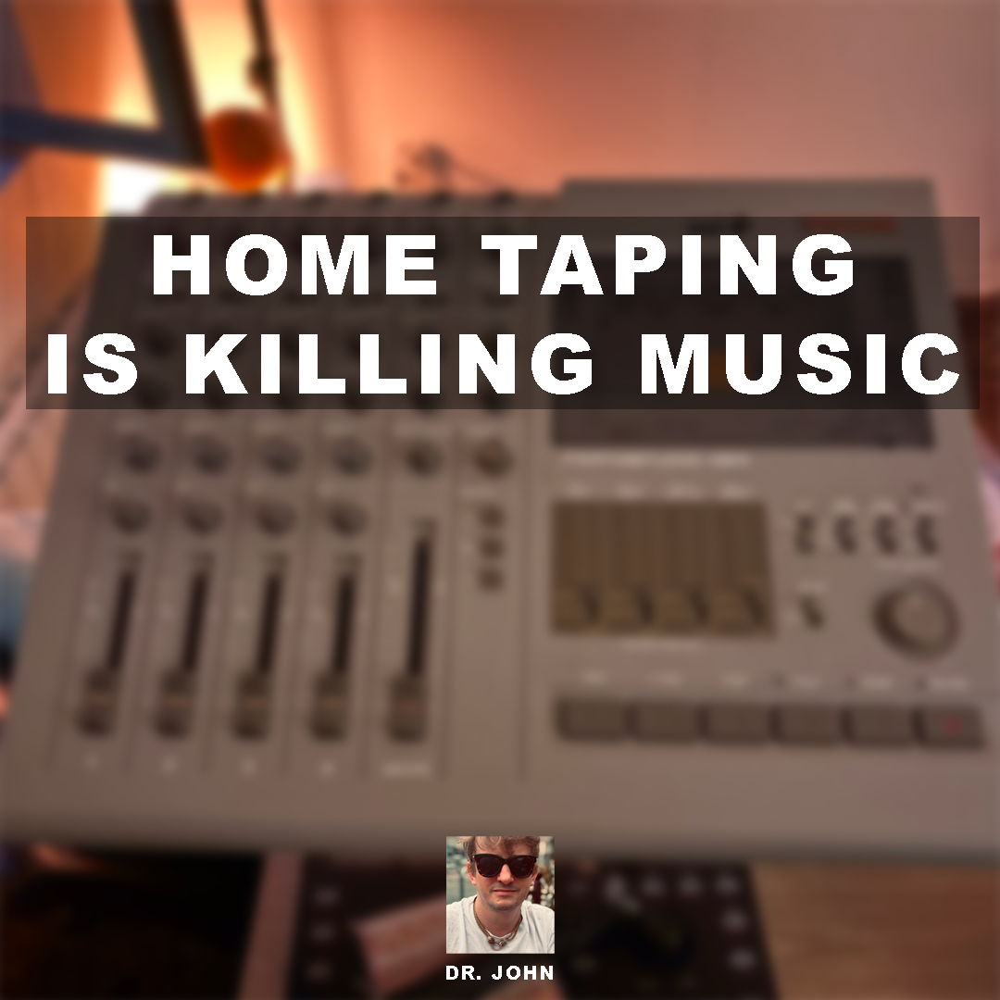

Home Taping is Killing Music
Enregistrements pirates de concerts, partagés librement sur Bandcamp. Un geste de mémoire et d’amour pour la scène vivante.

Live bootlegs
Bandcamp
Esprit pirate
Chaque enregistrement est capté sur le vif : micros bricolés, souffle du public, imprévus, saturation parfois. Rien n’est poli. C’est le grain du live, son authenticité. Tous les fichiers sont accessibles gratuitement.
Ici, 25 sessions — concerts, improvisations, happenings — publiées au fil des années. Chaque entrée ouvre un lecteur Bandcamp intégré.